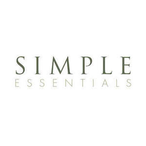

Trade Mark Journal No.2025/034 22 August 2025
UK00004246571 8 August 2025 (3,41)

- Class 3
- Cosmetics and cosmetic preparations; Perfume oils for the manufacture of cosmetic preparations; Perfumery products; Perfumery; Perfumery and fragrances; Cosmetics; Natural perfumery; Cosmetic preparations; Functional cosmetics; Cosmetic soaps; Synthetic perfumery; Lotions for cosmetic purposes; Skincare cosmetics; Essences for cosmetic purposes; Tonics [cosmetic]; Cosmetic sun-protecting preparations; Deodorants for personal use [perfumery]; Anti-ageing serums for cosmetic purposes; Pomades for cosmetic purposes; Natural oils for cosmetic purposes; Cosmetic soap; Bath oils for cosmetic purposes; Cosmetic moisturisers; Serums for cosmetic purposes; Cosmetic preparations for skin renewal; Cosmetic products for the shower; Cosmetic skin fresheners; Cosmetic facial lotions; Facial lotions [cosmetic]; Skin whitening preparations [cosmetic]; Kits (Cosmetic -); Suncare lotions [for cosmetic use]; Hair preservation treatments for cosmetic use; Cosmetic products in the form of aerosols for skin care; Cosmetic sunscreen preparations; Cosmetic preparations for eyelashes; Cosmetic kits; Sunscreens [for cosmetic use]; Anti-aging creams [for cosmetic use]; Body deodorants [perfumery]; Cosmetic sun-tanning preparations; Creams (Cosmetic -); Cosmetic creams; Cosmetic skin enhancers; Colouring preparations for cosmetic purposes; Moisturising concentrates [cosmetic]; Natural cosmetics; Anti-ageing creams [for cosmetic use]; Procollagen for cosmetic purposes; Cosmetic hair care preparations; Cosmetics preparations; Astringents for cosmetic purposes; Cosmetic preparations for body care; Cosmetic preparations for skin care.
- Class 41
- Instruction in cosmetic beauty.
Simple Essentials Limited